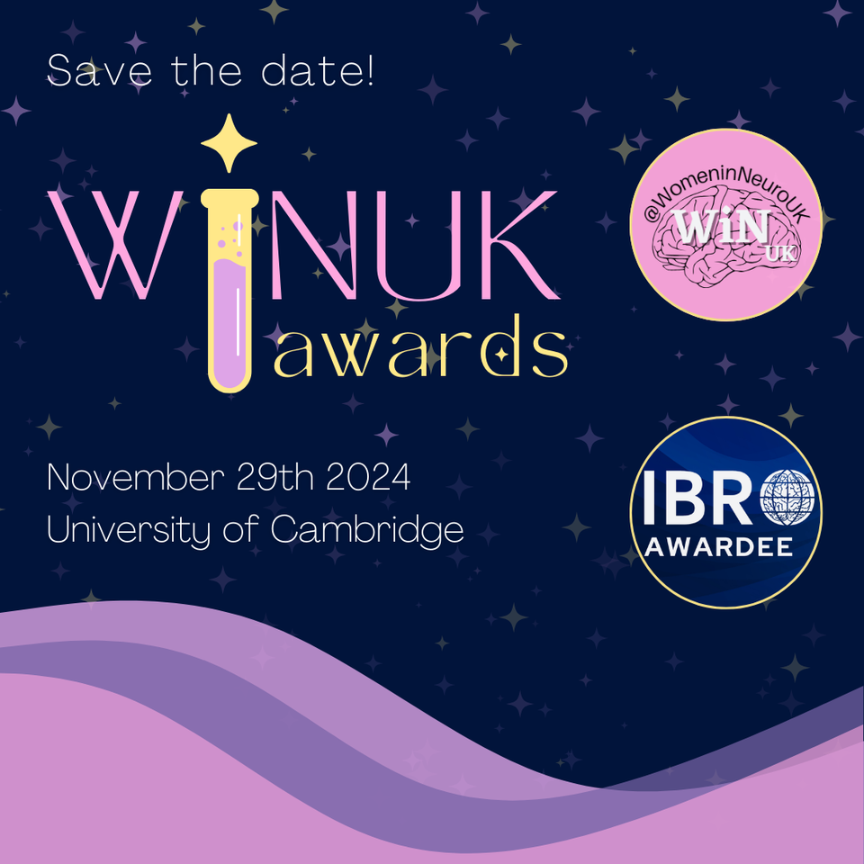
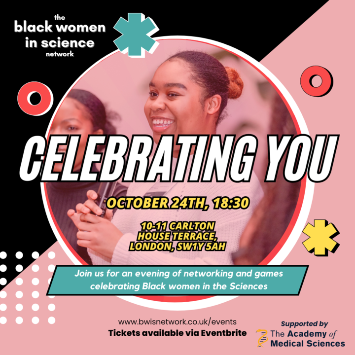
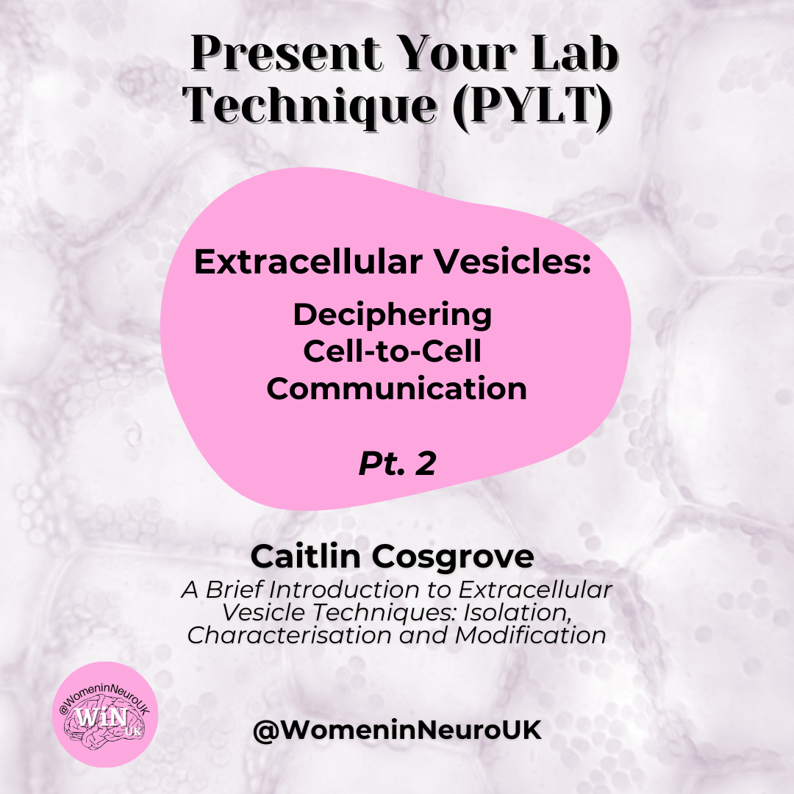
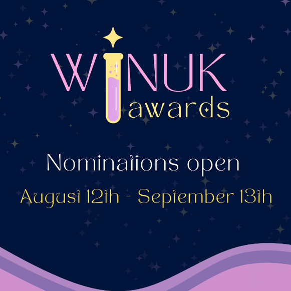
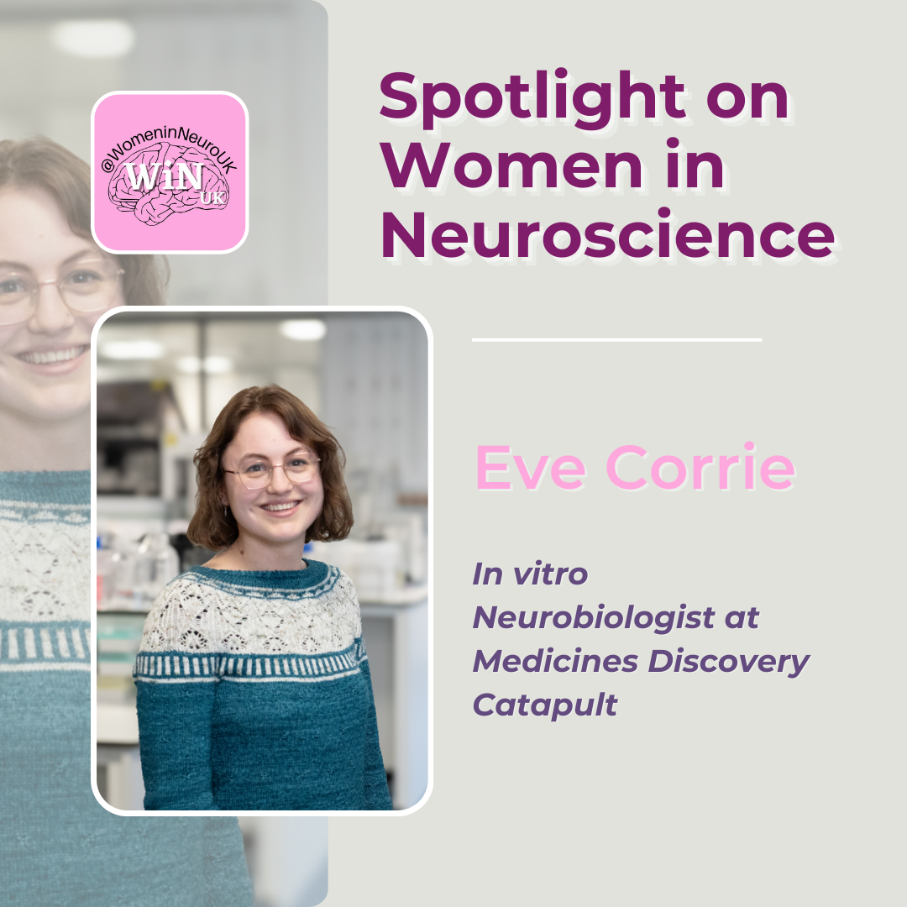
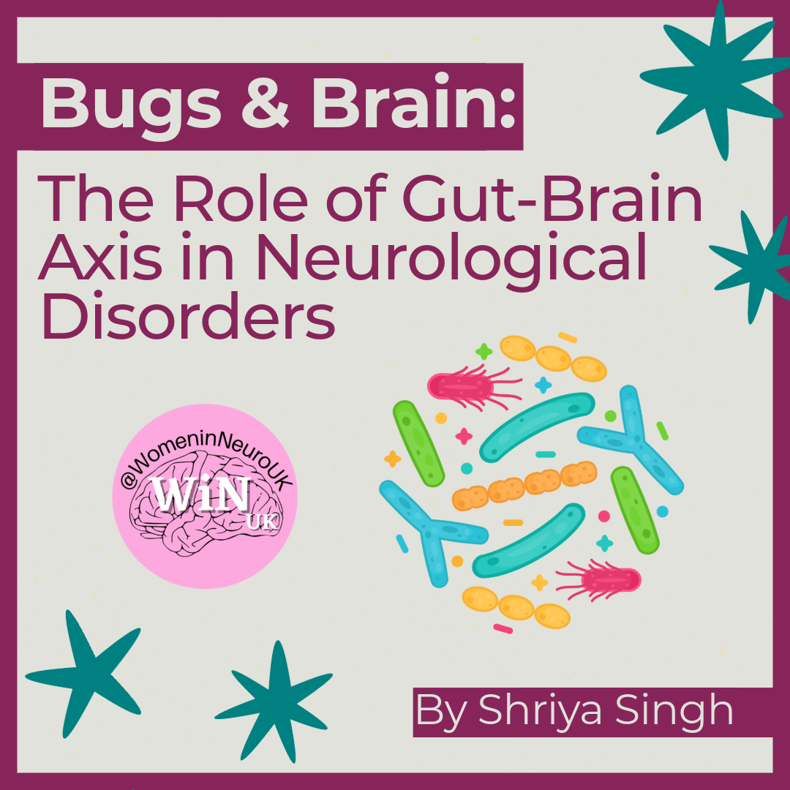
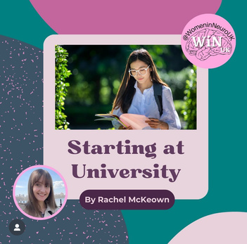

HELLO WINUK COMMUNITY,
Gender disparity in STEM is very much a present issue where women
still encounter resistance and need to navigate obstacles to get a
space in this field.
Despite this, plenty of women broke
through these barriers and significantly contributed to
neuroscience.
At WiNUK, we want to open these doors and acknowledge and promote
women neuroscientists who made a contribution to research and
inclusive workspaces.
That’s why we’ve come up with the WiNUK
Awards, to be held in November 2024. We hope with this award
ceremony we don’t only highlight amazing achievements in
neuroscience but also serve as an inspiration for the next
generation of women neuroscientists. Stay tuned not to miss
anything!
PAST EVENTS
Psychedelics Event
We held our psychedelics event where we explored their role in
neuroscience. Our speakers included Ms. Susan Guner, a holistic
psychotherapist and host of the Psychedelics Conversations
podcast, who shared insights into how psychedelics are helping
those suffering from illness, Professor Emma Robinson, Professor
of Psychopharmacology who explored her research on affective
biases and emotional behaviour in rodents using psychedelic drugs,
and Dr Danielle Kurtin a research fellow at Imperial College
London who investigates the neural underpinnings of substance
(mis)use/dependence.
If you had the chance to attend, we’d love to hear your thoughts
about it.
https://docs.google.com/forms/d/e/1FAIpQLScjy5w2OjwjfxYr4AV_tX0556BWzOX-_ss1yXUVl1jM_5W8Mg/viewform?usp=sharing
UPCOMING EVENTS
WiNUK Awards
November is getting closer and that means *drum roll* the WiNUK
Awards. Keep an eye on our social media to follow all the updates,
nominees and more!

EXTERNAL EVENTS
Black Women in Science Network’s Celebrating You
This Black History Month, you won’t want to miss the Black Women
in Science Network’s Celebrating You event. Held for the third
time, it promises to be another celebration of the achievements of
Black Women at all stages of their career in the Sciences. This
year, the event will held on Thursday 24th October 2024 at Carlton
Terrace House. Doors will open at 6:30 pm and you’ll be guided
through an icebreaker game, a fun new networking game, and then
our much-loved celebration jar session. There will also be lots of
time for free networking and interactions with the other
attendees. Through all of this, you can expect to meet inspiring
scientists, make new connections, and come away feeling
celebrated!!
Register here:
https://bwis-cy-2024.eventbrite.co.uk
Date: October 24th, 2024
Location: 10-11 Carlton House Terrace

SOCIALS RECAP
WiNUK social media actively engaged in several impactful
initiatives:
Pain Awareness Week Content
The team created content focused on Pain Awareness Week. Neave
attended the international pain conference in Amsterdam,
highlighting current discussions and advancements in pain
management. Additionally, senior Content Creator Katie reviewed
"Empire of Pain" by Patrick Keefe. This book explores the
controversial history of Purdue Pharma and its opioid,
OxyContin, shedding light on its medical and societal
implications.
Neave designed a graphic and social media post discussing
sex differences in the context of pain, aiming to raise
awareness and foster understanding.
Alzheimer’s Research UK South West Network Event
Lizzie participated in the Early Career Researchers Day at the
University of Plymouth. She gave a talk on creating inclusive
workplaces, which received positive feedback for its practical
insights and inclusive approach. Lizzie also served as a judge
for the event's Early Career Researcher talks and poster
sessions, further contributing to the advancement of research
and inclusivity in the field.
Present Your Lab Technique (PYLT)
WiNUK also posted Part 2 of Caitlin Cosgrove’s PYLT (Present
Your Lab Technique). This post delved into the technical aspects
of extracellular vesicle (EV) research, providing an insightful
look at:
- EV isolation using Size Exclusion Chromatography (SEC)
-
EV characterization through Nanoparticle Tracking Analysis
(NTA), determining particle size and concentration
-
EV modification via Electroporation for therapeutic cargo
loading
-
The application of these modified EVs in a cell model of
ischaemic stroke, highlighting their potential in medical
research and therapeutic development
Do you know an interesting technique we have not covered yet? If
you’re interested in participating in the PYLT series, fill out
this form:
https://forms.gle/DuncyUueYzZ41JX39

SOCIALS RECAP
WiNUK Awards
We hope you have been following the countdown for #WiNUKAwards2024.
Keep an eye out for more information to come about the event!
Make sure to celebrate and recognise those driving change in
sex/gender research, mentorship, science communication, and
diversity in STEM 🧠 using the #WiNUKAwards2024

🌟 Join the Present Your Lab Technique (PYLT) Series with WiNUK! 🌟
Are you passionate about neuroscience and eager to share your
expertise? Look no further than the PYLT series, presented by WiNUK!
What is PYLT?
PYLT stands for Present Your Lab Technique, an initiative that
shines a spotlight on diverse lab techniques in neuroscience.
Whether you're an early-career researcher or a senior professional,
PYLT offers a platform to showcase your innovative methods.
Breaking Barriers, Changing Perceptions
At WiNUK, we believe in breaking down barriers to accessing the
field of neuroscience. PYLT is more than just a series—it's a
movement towards inclusivity and diversity in science. We challenge
stereotypes and celebrate the unique contributions of scientists
from all backgrounds.
Why Participate?
- Visibility: Reach a wider audience of
neuroscience enthusiasts, researchers, and students.
- Impact: Inspire the next generation of scientists
by sharing your knowledge and passion.
- Community: Join a supportive network of
like-minded individuals dedicated to advancing neuroscience and
gender equity.
How to Get Involved:
Participating in PYLT is easy! Simply submit your lab technique
video, graphic or photos to WiNUK. Our team will review submissions
and provide support throughout the process. Whether you're
showcasing cutting-edge technologies or classic methodologies, your
contribution is valued.
Ready to Present Your Lab Technique?
Submit your proposal today:
https://forms.gle/bScMYzhHNdgQw1CU7
BLOG ‘MONTH IN REVIEW’
Over the last month, we posted lots of exciting articles. We:

Discussed moving from academia to industry in our
interview with in vitro neurobiologist, Eve Corrie
Linked gut health to research neurological disorders

Unpacked the gender pain gap in neuroscience research

Gave you some crucial advice for starting your university
journey
BLOG
Fancy writing for the WiNUK blog , but not sure what to write about?
Not to worry - the editors regularly put together a collection of
prompts to get you started.
REALITY
Section Editor: Lauren Wallis
-
International Awareness Days in October (World Cerebral Palsy
Day, World Mental Health Day, and World Stroke Day) - highlight
research or personal stories!
-
Presenting at scientific conferences - your tips and tricks, or
reach out to someone in the neuroscience field for their advice.
RESEARCH
Section Editor: Julia Dabrowska
REVIEW
Section Editor: Rebecca Pope
-
For ADHD Awareness Month review ‘ADHD 2.0: New Science and
Essential Strategies for Thriving with Distraction - from
Childhood through Adulthood’ by Drs Hallowell and Ratey
-
Review the Society for Neuroscience (SfN) Conference 2024
(Chicago, 5th-9th October)